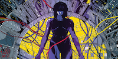
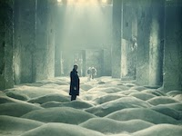

The 1995 animated film "Ghost in the Shell," directed by Mamoru Oshii and based on Masamune Shirow's manga of the same name, explores complex themes related to identity, consciousness, and the impact of technology on the human experience. The characters, especially Major Motoko Kusanagi, question the essence of their humanity as their bodies become increasingly augmented by cybernetic technology. The film prompts viewers to consider the implications of blurring the boundaries between human and machine and the societal impact of such advancements.
You can find more information about this movie online on Rotten Tomatoes.

Andrei Tarkovsky's film "Stalker," released in 1979, is a movie from the Soviet Union that is loosely based on the science fiction novel "Roadside Picnic" by Arkady and Boris Strugatsky. It revolves around a mysterious guide, known as the Stalker, who leads two clients, a Writer and a Professor, through a forbidden and dangerous area called "the Zone". The Zone is said to have the power to fulfill a person's innermost desires. However, the film suggests that the fulfillment of these desires might not bring happiness. The journey therefore becomes one of self-discovery and about the consequences of pursuing one's desires.
You can find more information about this movie online on Rotten Tomatoes.
"Alphaville" is a 1965 French New Wave science fiction film directed by Jean-Luc Godard. The movie is set in a dystopian future, and its narrative blends elements of film noir, science fiction, and political allegory. The film's primary setting is the city of Alphaville, a technocratic and emotionless metropolis governed by a powerful computer named Alpha 60. The movie critiques the dehumanizing effects of technocracy, and features a computer system that controls every aspect of society, eliminating individuality and emotional expression.
You can find more information about this movie online on Rotten Tomatoes.